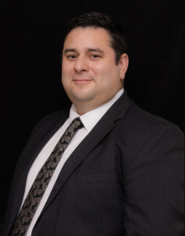

Brother Leonidas Yopan
About Me
I am passionate about web development and eager to learn more about creating engaging and user-friendly websites. This course is an opportunity for me to enhance my skills and knowledge in the field.
My Goals
- Learn the fundamentals of web development
- Create responsive and accessible websites
- Build a portfolio of projects to showcase my skills